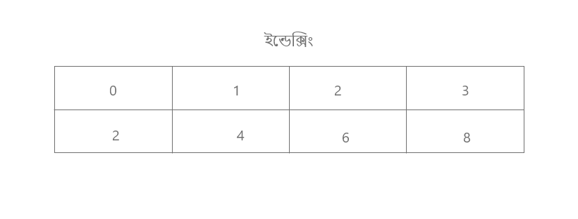

Torikus Sadik
Computer Programmer
Let's learn something about objects and types
x = 1000
x = 500
প্রথমে দুটি ভেরিয়েবল নিয়েছি। মজার ব্যাপার হলো দুটো ভেরিয়েবল ই সেইম। আর তুমি হয়ত জানোই যে, প্রতিটি ভেরিয়েবল ই অব্জেক্ট হিসেবে ধরা যায়। সেক্ষেত্রে চিন্তা করলে উপরে দুটো সেইম অব্জেক্ট রয়েছে। চলো এবার প্রোগ্রাম লেখা যাকঃ
>>> x = 1000
>>> x = 500
>>> print(x)
500
তুমি নিশ্চই চিন্তা করছো কি ব্যাপার!! এরকম আউটপুট আসলো কেন? x এর মান ত প্রথমে দেয়া আছে 1000 তাহলে x এর মান 500 কেন print হলো?! এরকম চিন্তা করাটা স্বাভাবিক। তোমার চিন্তার প্রসেস টা একটু বাড়িয়ে দেই। কম্পাইলার / ইন্টারপ্রেটার আসলে লাইন বাই লাইন এক্সিকিউশনের কাজ করে থাকে। সে দেখে প্রথম লাইনে কি আছে? তারপর দেখে দ্বিতীয় লাইনে কি আছে? এভাবে চলতে থাকে।
এবার চলো দেখে নেই কম্পাইলার/ইন্টারপ্রেটার এই প্রোগ্রামের সাথে কি কি করেছে। যেহেতু >>> আছে প্রোগ্রামে সেহেতু এটা ইন্টারপ্রেটারের কাজ। কম্পাইলারে >>> থাকে না। যাহোক, এখানে ইন্টারপ্রেটার প্রথমে দেখবে x = 1000 তারপর দেখবে আবার x এর মান 500 তারপর একটি print() ফাংশন দেখতে পারবে সে। আর তাই সে print() এর মধ্যে কিছু আছে কি না তা দেখে নিবে। সে দেখল print(x) অর্থাৎ x এর মান সে প্রিন্ট করবে। সে লাস্ট অব্দি x এর মান পেয়েছে 500 তাই আউটপুট হিসেবে 500 প্রদর্শন করবে। কথা একটু বেশি হয়ে গেল। তুমি চাইলে আরো সহজ কোন উদাহরণ ভাবতে পারো।
>>> x = 1000
>>> x = 500
>>> print(x)
500
>>> y = x
>>> x = 3000
>>> print(x)
3000
প্রোগ্রামের বাকি অংশে কি কি হয়েছে তুমি নিশ্চই বুঝতে পেরেছো এবার।
id ( ) function:
id() ফাংশন একটু অবাক করবার মতো জিনিস। এটি একটি ইউনিক ইন্টিজার ভ্যালু প্রিন্ট করে । চলো প্রোগ্রামে দেখি এর কারিশমা।
>>> a = 32
>>> id(a)
140731619482240
প্রোগ্রামের আউটপুট দেখে মাথা ঘুরে গেল?? মাথা ঘোরার কিছু নেই। আগেই বলেছি এটা একটা ইউনিক ইন্টিজার প্রিন্ট করে। চলো এর আরো কিছু অপারেশন দেখে নেই।
>>> b = 17
>>> id(b)
140731619481760
>>> b = 17
>>> id(b)
140731619481760
>>> b = a
>>> id(a)
140731619482240
>>> a is b
True
Augmented Assignment
চলো augmented assignment সম্পর্কে কিছু জেনে নেই। প্রোগ্রামে ফোকাস করোঃ
>>> t = 5
>>> print(t)
5
>>> t += 2
>>> print(t)
7
প্রোগ্রামে কিন্তু একটি বিশেষ অপারেটর += ব্যবহার করা হয়েছে। এই অপারেটরে কাজ হচ্ছে আগের ভেরিয়েবলের মানের সাথে নতুন মান যোগ করা। কিছুটা নিচের প্রোগ্রামের মতোঃ
>>> t = 5
>>> print(t)
5
>>> t + 2
7
Mutable Objects
>>> r = [2, 4, 6]
>>> s = r
>>> s
[2, 4, 6]
>>> s[1] = 27
>>> s
[2, 27, 6]
>>> r
[2, 27, 6]
উপরের প্রোগ্রামে খেয়াল করো লাইন ১ এ একটি লিস্ট নেয়া হয়েছে। লাইন ২ এ একটি ভেরিয়েবল s যেখানে r এর ভ্যলু এসাইন করা হয়েছে। এরপর s এর মান জানতে চাওয়া হয়েছে অর্থাৎ r এর মান। লাইন ৫ এ ইন্ডেক্সিং করা হয়েছে। ইন্ডেক্সিং শুরু হয় ০ থেকে । যেহেতু লিস্টে ৩ টা আইটেম আছে সেহেতু ইন্ডেক্সিং হবে এরকম [0] = 2 [1] = 4 [2] = 6 আশা করি বুঝেছো ব্যাপার টা। লাইন ৫ এ দুই নাম্বার অর্থাৎ [1] ইনডেক্স এর মান সেট করলাম ২৭ এবং লাইন ৬ এ আবার s এর মান জানতে চাইলাম। তাই প্রিন্ট হলো, [2, 27, 6] কারণ আমরা ইন্ডেক্সিং এর মাধ্যমে মান পরিবর্তন করে দিয়েছি।

Computer Programmer